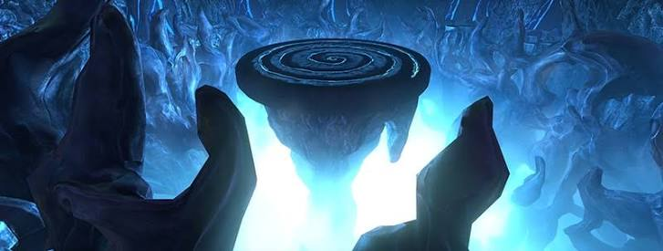

DUNGEON MECHANICS
SPELLPLAGUE CAVERNS
Break the chains. Aim the eye. Don't phase Nostura like an absolute menace.

OVERVIEW
SPELLPLAGUE CAVERNS
Spellplague Caverns contains three major mechanics-heavy encounters: Kabal, the Giant Nothic Stone-Eye and Nostura.
The dungeon focuses on chains, safe-zone positioning, knockback control, eye mechanics and careful boss phasing.
BOSS ONE
KABAL
- Kabal is fought across three versions of himself.
- He begins each phase invulnerable.
- The arena is divided into an inner ring and outer ring.
- Stand in the same ring as Kabal.
- The opposite ring fills with lava.
- Avoid all red telegraphs while remaining in the safe ring.
KEY MECHANIC
FIRE GOLEMS & MOLTEN ORBS
- Fire Golems spawn near the anvil.
- Killing a Fire Golem creates a molten orb on the ground.
- These molten orbs are required to handle Kabal's mechanics.
CHAIN MECHANIC
SEARING CHAINS
- Two players can become chained together.
- The chain cannot be broken normally.
- Line the chain across a molten orb.
- Passing the chain through the orb breaks it.
- If players remain chained too long, Kabal pulls them toward the centre and kills them.
VULNERABILITY MECHANIC
BREAK KABAL'S SHIELD
- Kabal becomes shielded and immune during each phase.
- A molten orb must be dragged into Kabal.
- When the orb touches him, his shield breaks.
- Once vulnerable, damage him until the next phase begins.
GROUP CHECK
FULL GROUP CHAINS
- Later in the fight, every player receives a Searing Chain.
- Multiple Fire Golems spawn around the arena.
- Kill the Golems to create enough molten orbs for everyone to break their chains.
- DPS should help tanks and healers clear their chains if they are struggling.
- Anyone still chained when the mechanic expires is pulled into the centre and killed.
BOSS TWO
GIANT NOTHIC STONE-EYE
- The boss repeatedly jumps around the platform.
- Each jump creates strong knockback.
- Stay near the centre of the platform to avoid being thrown off.
- As the fight continues, the boss grows larger.
- The larger he becomes, the stronger the knockback from his jumps.
FLOOR MECHANIC
SAFE CIRCLE
- Most of the platform can turn red.
- A small safe circle remains.
- Move into the safe circle before the attack lands.
- Players caught outside are launched into the air and take heavy fall damage.
EYE MECHANIC
PETRIFYING GAZE
- A red glowing eye appears above the boss.
- Turn away from him immediately.
- Looking at the boss during the eye mechanic turns the player to stone and stuns them.
- Being petrified near the edge is especially dangerous because the next jump can knock you off the platform.
TANK MECHANIC
CONJURED MIRRORS
- Mirrors appear around the outside edges of the arena.
- The tank should position the boss so his eye attack faces one of the mirrors.
- When the gaze hits a mirror, the boss stuns himself.
- This also causes him to shrink.
- Regularly shrinking him reduces the strength of his later knockback attacks.
DUNGEON MECHANIC
JUMP SPELL
- A special jump power is provided during part of the dungeon.
- Activate the power to place a targeting circle.
- Aim the circle at the destination platform.
- Activate the power again to leap across the gap.
- Normal jumping is not enough for these crossings.
FINAL BOSS
NOSTURA
- Do not burn Nostura too quickly.
- She has phase safeguards and pushing her through thresholds too fast can wipe the group.
- Control damage and allow each mechanic to resolve before forcing the next phase.
PORTAL PHASE
YELLOW BEAMS
- Nostura disappears and several portals appear.
- Yellow beams fire between the portals.
- Position between two portals to avoid being struck by the beams.
PERSONAL MECHANIC
CURSE
- One player can receive a black curse marker.
- The cursed player must stay away from everyone else.
- Moving close to another player spreads the curse.
- The healer should keep the cursed player alive while they remain separated.
EYE MECHANIC
CURSE CLEANSING
- When Nostura performs her eye mechanic, normal players should look away.
- The cursed player must do the opposite.
- If you are cursed, look directly at Nostura's eye.
- Being stunned by the eye removes the curse.
- If you are not cursed, looking at the eye causes a longer stun and should be avoided.
PORTAL MECHANIC
TENTACLES & BLUE FIRES
- Tentacles and blue-fire objects appear during the encounter.
- Destroy the required targets to open escape portals.
- Each portal can only be used by one player.
- Every member of the group must enter a portal.
- A player left outside when Nostura resolves the mechanic is killed.
- Once a player has successfully passed through, they glow yellow.
QUICK REFERENCE
SPELLPLAGUE SURVIVAL NOTES
- Kabal ring → stand in the same ring as boss.
- Chain → drag it through molten orb.
- Kabal shield → drag molten orb into boss.
- Full-group chains → break EVERYONE out.
- Stone-Eye jump → stay central.
- Red eye → look away.
- Tank → aim eye into mirror to shrink boss.
- Floor mostly red → get into safe circle.
- Nostura → do not over-phase her.
- Portal beams → stand between portals.
- Curse → stay away from everyone.
- Cursed + eye → LOOK AT HER.
- Not cursed + eye → LOOK AWAY.
- Escape portals → one player per portal, everyone gets one.